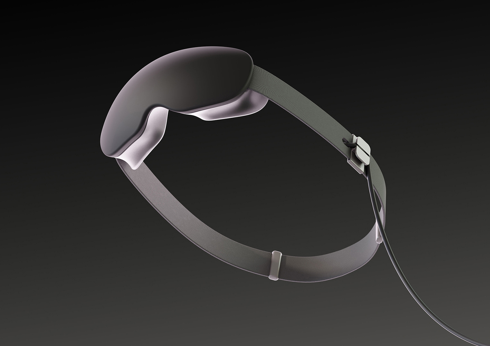

As a Research Support Assistant for Design Health Collab at Monash, I made renders for the PupilMetrix project with Rowan Page. Renders are made with Blender.
Renders

PupilMetrix is a clinical tool used to measure light sensitivity to improve mood and general health.
Dynamic lighting was used to highlight the delicate forms of PupilMetrix. Facebuilder for Blender was used to create 3D models of the faces from stock photos, which was used to place PupilMetrix and render it with accurate light, shadows, and reflections. The render will then be recomposed onto the stock photo.
Many iterations of the eyepiece at several stages of the project was used to improve ergonomic considerations. This was the prototype at the end of that phase of the project, with updated foam eyepieces to come.